Naturaleza
Nature
Senderismo
Hiking

Cerro del Quinini: Reserva natural con senderos históricos.

Reserva San Rafael: Caminatas por el bosque de niebla.

Caminos Reales: Senderos antiguos de piedra.
Miradores
Viewpoints
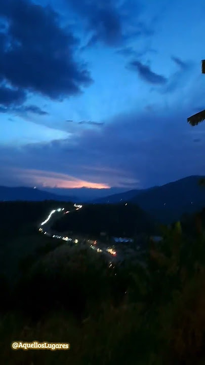
Mirador La Pampa: Vista panorámica de la región.
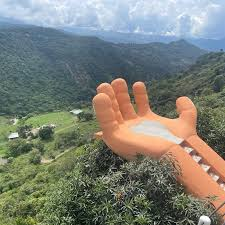
Mirador Chinauta: Atardeceres espectaculares.
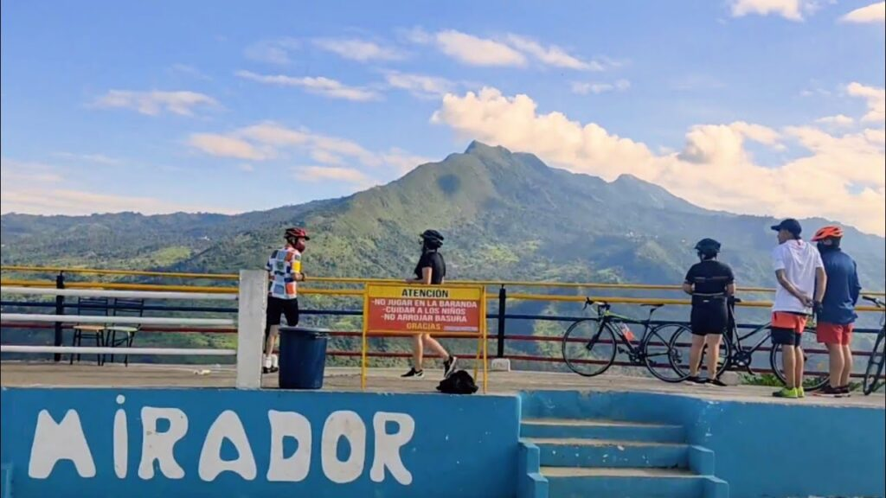
Mirador San Jorge: Observación del valle del Sumapaz.
Gastronomía
Gastronomy
Cafés Especiales
Specialty Coffee
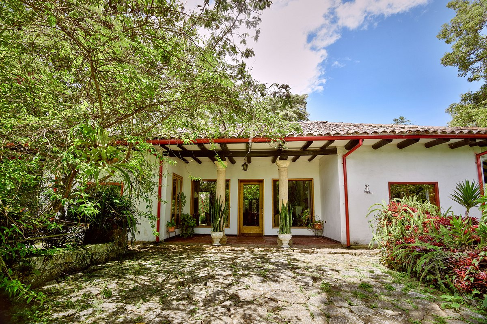
Hacienda Coloma: Tour del café y catación profesional.

Café La Esperanza: Café orgánico de origen local.
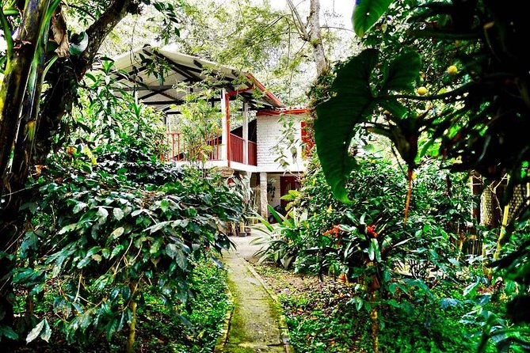
Café del Pueblo: El mejor aroma en el centro de la ciudad.
Platos Típicos
Typical Dishes
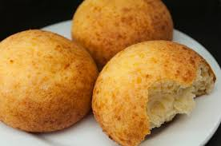
Almojábanas: Delicia tradicional de maíz y queso.
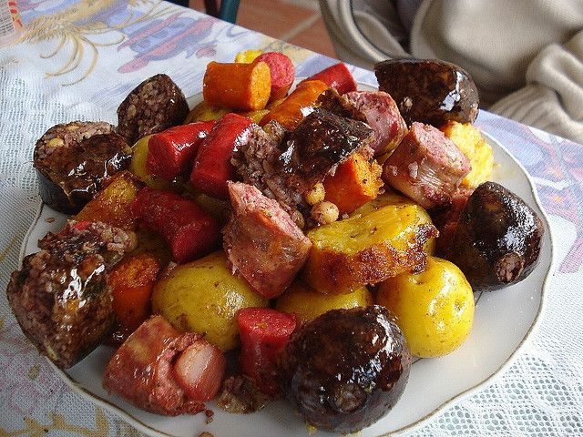
Fritanga Fusagasugueña: Plato variado con carnes y vegetales.
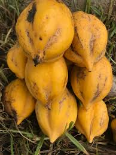
Dulce de Papayuela: Postre típico de la región.
Flora
Flora
Viveros
Nurseries
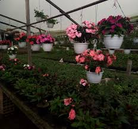
Vivero El Rosal: Gran variedad de plantas ornamentales.
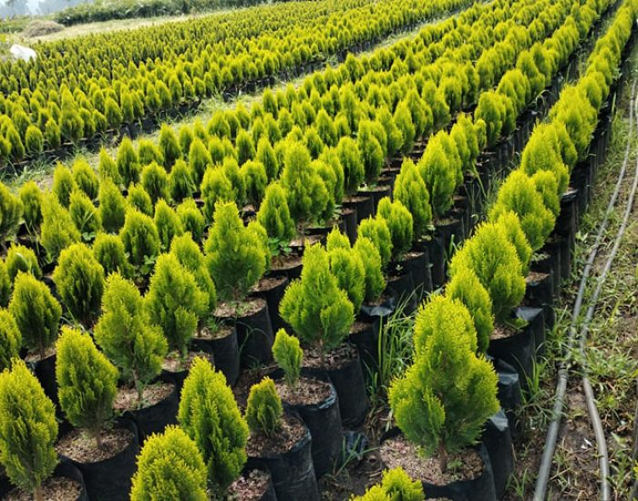
Vivero Paraíso: Especialistas en plantas de interior.
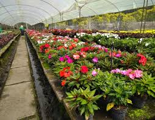
Viveros de Fusagasugá: Recorrido por la Ciudad Jardín.
Orquídeas
Orchids
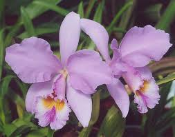
Cattleya: La flor nacional en su hábitat natural.
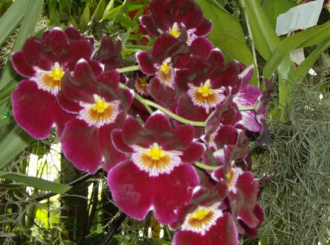
Exposición Anual: Evento principal de flores en Fusa.
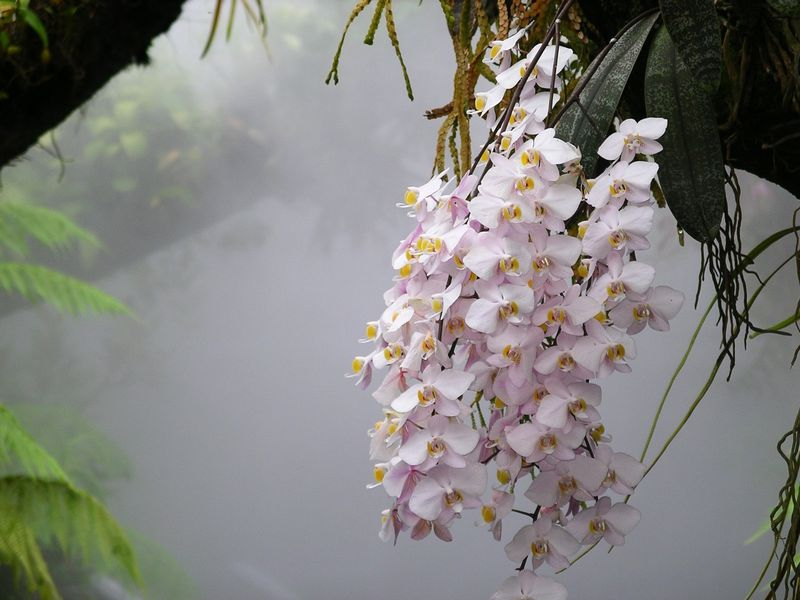
Orquideario Local: Conservación de especies raras.
Cultura
Culture
Museos
Museums
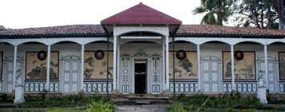
Casa de la Cultura: Centro de historia y arte local.
Biblioteca Municipal: Espacio de lectura y patrimonio.
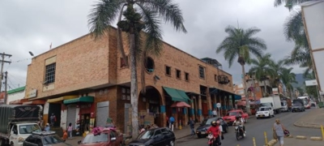
Galería de Arte: Obras de artistas regionales.
Arquitectura Colonial
Colonial Architecture
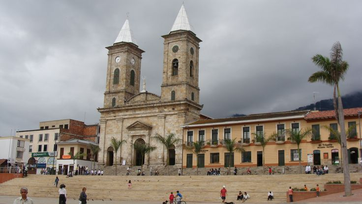
Templo Parroquial: Arquitectura religiosa icónica.
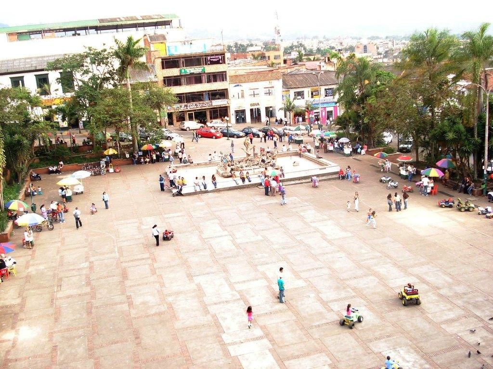
Plaza Mayor: El corazón histórico de la ciudad.
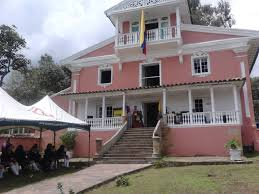
Casonas Antiguas: Fachadas que cuentan la historia de Fusa.